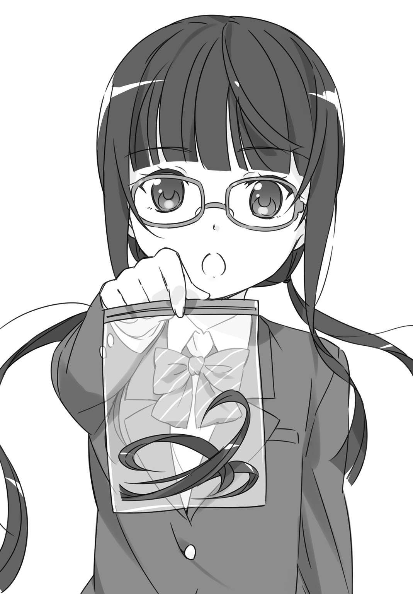
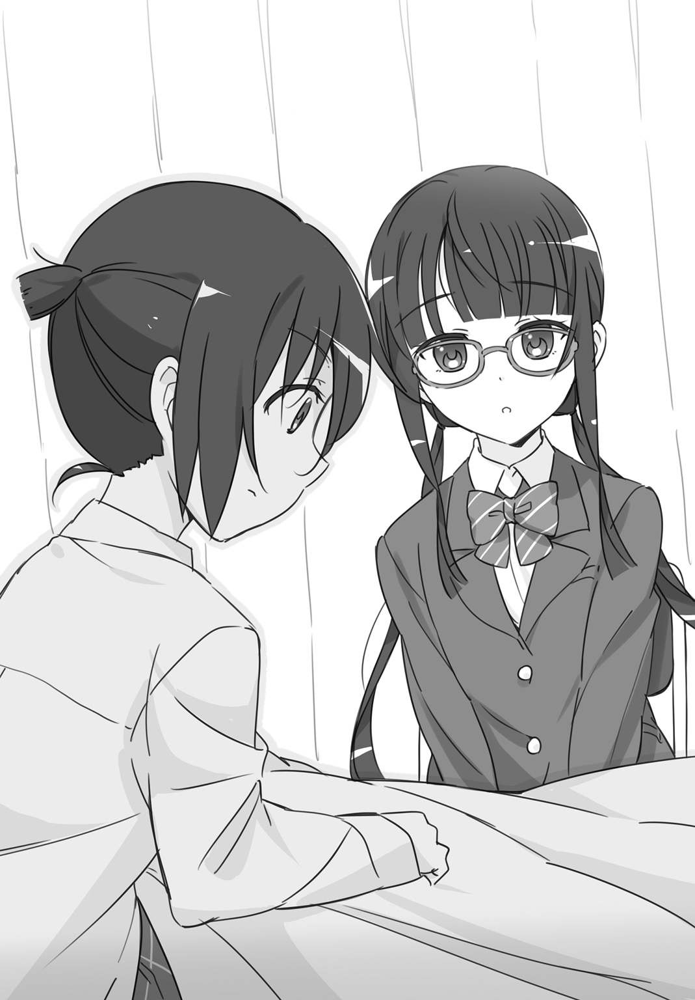
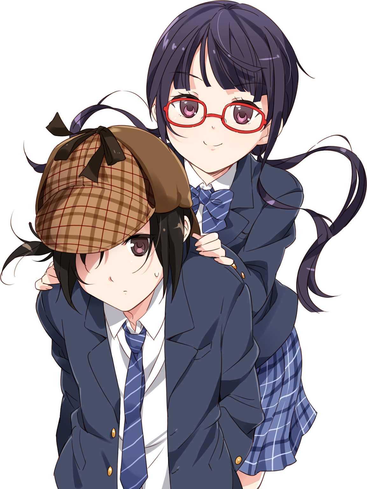
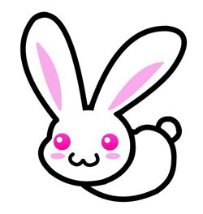

| 髪の毛探偵 石神くん １ ～ひとりぼっちの桜の亡霊～ (impress QuickBooks) | |
| 晴海 まどか | |
| (2014) | |
髪の毛探偵 石神くん １
～ひとりぼっちの桜の亡霊～
晴海まどか
髪の毛探偵 石神くん◎目次
第１巻（本書）
第２巻（２０１４年12 月３日発売）
ひとりぼっちの桜の亡霊▼６．亡霊が抱える事情／インターミッション １
茶パツおばけの肝だめし▼１．六月の肝だめし／２．肝だめしその後／３．神社で探しもの／４．オカルト研究会／５．偽物でなく人毛／６．茶パツのおばけ／インターミッション ２
第３巻（２０１４年12 月10 日発売）
おかっぱかぐや姫の仮装行列▼１．おかっぱかぐや姫／２．なくなったカツラ／３．彼女である必然性／４．話したかった先生／５．なくなっていない／６．今度こそかぐや姫／エピローグ
ひとりぼっちの桜の亡霊
１．調査依頼は突然に
密 閉 式 のビニール袋にしっかりと収められていたのは、黒い髪の毛だった。
「これが誰のものか、調べてほしいの」
これまでろくに話したことなどなかったはずのクラスメイト、狩 野 さんは遠慮するそぶりなど一切見せず、それを俺に差し出した。
◆
五月の中旬。梅雨が目前のこの季節、俺は例年ユーウツになる。
机に肘をついて、隣の机で盛り上がっているクラスメイトたちをぼぅっと眺める。季節的にはまだ早いというのに、何やら怪談話のようなものをしていた。
「聞いた？ 桜の亡霊がまた出たってやつ」
「桜の木で首吊った女子生徒の霊だっけ？」
「あれ、俺は桜の木の下に埋められた女子生徒の霊って聞いたけど」
一体どこからこういう情報を仕入れてくるんだろう。自分の一つに結んだ長い髪をくるくると指に絡ませつつ、常々不思議に思う。
男三人の輪の中心にいるのは、常に明るく人懐っこいテニス部の立 川 和 樹 だった。常に屋外で練習しているせいか、和樹の肌は一年を通して浅黒く、髪もその肌とマッチした焦げ茶色である。肌だけでなく、髪も日焼けして退色してしまっているのだ。和樹の太くてまっすぐな髪は、見るからに乾燥してて気になる。じれったい。もう少し手入れしてやればいいのに。
放課後の教室は和樹たちに限らず、おしゃべりに夢中な生徒たちが残っててにぎやかである。おしゃべりに参加してない俺が残っている理由もないので、さっさと帰ればよかったのだけど。窓の外に広がる灰色に垂れこめた雲を見て、そろそろ梅雨だなぁなんて考えてしまい、なんとなく腰を上げかねて現在に至る。
梅雨の何が嫌かって、湿度が上がることに尽きる。湿度が上がると、髪の毛は湿気を多分に含んで広がりがちになる。自分の髪の状態が気になるのはもちろんだけど、何も気にせず髪が広がるがままの周囲が気になって気になって、うがーってなる。
今日もこれから雨が降るのかもしれない。空気がほんの少し、湿気っぽい気がする。なおさらさっさと帰るべきだった。けど和樹たちはまだ話に夢中で、はたから見れば俺もその輪に一応参加しているように見えるだろうし、和樹も俺が話を聞いてると思っているに違いない。和樹はそういうやつだ。席を立つにしても声をかけるくらいした方がいいだろうなと、コミュニケーション能力に難がある俺でも考えるわけで、そうするとやっぱりなんだか面倒で立ち上がる気力がわかない。
そんなこんなでぼうっとしていたそのとき。
ぽん、と背後から軽く肩を叩かれた。
「石 神 くん」
ふり返ってその声の主を見て、嫌な予感に身体が強 ばった。
狩野麗 奈 。我がクラスの（女子の）絶大なる支持を集めるクラス委員長で、風紀委員長も兼任している。校則はやぶるためにあるという言葉を知らない彼女は、常に折り目正しい白いハイソックスにひだのそろったひざ丈のスカートという、模範的な生徒の代表みたいな格好をしている。その長い髪は黒くて艶があるのに、きつく二つに結んでいるのが残念きわまりない。
その狩野さんの眼光の強い黒目が、赤いセルフレームのメガネ越しに俺を見下ろしていた。
「......何？」
一歩引いた。俺の自慢のポニーテールに人一倍手厳しい狩野さんに、苦手意識以外の感情は持ち合わせていない。
「ちょっと、話があるんだけど」
とっさに返す言葉がなかった。
でもって気がつくと、おしゃべりに夢中だったはずの和樹たちまで無言になっていて。
次の瞬間、何かが弾けたように教室は笑いに包まれた。
「永 ちゃん、とうとう説教部屋行き？」
「こえー」
「生きて帰ってこいよ！」
仮にも女子に「話がある」と声をかけられたというのに、周囲の反応がこれだ。何かを言い返す気力もわかない。まぁでも、はたから見ても俺と狩野さんに何かがあるなんて一ミリたりとも思えないってことだろうし、事実、そのとおりなのである意味ありがたいことなのかもしれないけど。その原因は俺にだけあるわけじゃないことは主張しておきたい。狩野さんを恐れていない男子など、クラスには存在しないのだ。
「今、ここでじゃダメなの？」
俺の言葉に、狩野さんは頷いた。切りそろえられた前髪が、メガネの前をさらっと流れる。
「できれば」
同い年の女子とは思えない端 的 な回答だった。狩野さんはほかの女子のようにキャッキャとバカ騒ぎをするタイプではない、という認識はあったけど。冷静にもほどがある口調に気 圧 された。情けないことに、「わ、わかった」という返事は噛んでしまう。
そのついでに帰ればいいかと思い立ち、俺は机に引っかけてあった学生バッグを手にして席を立った。
教室を出ると、狩野さんはまっすぐに廊下を歩き、階段を下りていく。背筋がすらっと伸びていて、二つに結わいた髪は彼女の動きに合わせて控えめにさらさら動く。
我が二年三組は普通校舎の三階にある。校舎内は帰宅する生徒と部活動へ急ぐ生徒たちで騒がしく、そんな喧騒には一切見向きもせずに歩いていく狩野さんは異質に思えた。
「どこ行くの？」
先を行く狩野さんに追いつき、背後から声をかける。
「裏庭」
それ以上彼女の口が開かれることはなかった。無駄口を叩く気はないらしい。まぁ、俺としては、説教部屋ではないらしいことにとりあえずほっとする。もっとも、そんな部屋は学校にはないのだけど。
それにしても、だ。なんでまた、裏庭？
うちの中学には、普通校舎と特別校舎の二つの校舎がある。普通校舎には各学年の教室や職員室などがあり、特別校舎には音楽室や図書室、理科室などの特別教室が入っている。横に長い直方形の二つの校舎は横並びになっていて、正門から向かって左側にある二階建ての方が特別校舎である。その特別校舎が面しているのが、裏庭と呼ばれる花壇などがある一角だ。
裏庭、なんて名称だと絶好の告白スポットに思えるかもしれないけど、うちの学校に限って言えばそんな話はあまり聞かない。ないこともないのだろうけど、テニスコートやグラウンドに向かう生徒が通りかかる率が高いので、そういう話には不向きである。
まぁ、狩野さんが俺にそんな話をするわけはないけど。頭髪検査のことで職員室にでも引っぱって行かれるのが関の山じゃないかと思っていただけに肩すかし。
狩野さんに少し遅れ、昇降口でスニーカーに履き替えた。いっそこのまま狩野さんをふりきって帰ってしまえばいいんじゃなかろうか、なんて考えていたのがバレたのかもしれない。
「石神くん」
昇降口の入り口で改めて声をかけられた。けして大きくはないのに、よく響くアルトボイス。わかってますよ、と口の中でごちて、俺は狩野さんのあとについていく。狩野さんは胸ポケットからピンク色のリップクリームを取り出し、さっとひと塗りして再びしまった。
教室から見たとおり、空は厚い雲に覆われ、どんよりとしたグレーだった。湿気が気になって、ついつい首の後ろで一つに束ねた自分の髪に触れてしまう。つやつやした髪はするりと指の間を抜けた。結んだ髪に手ぐしを入れるのが今ではすっかりクセになっている。
アスファルトで固められた教職員用の駐車場を抜け、桜の木の前を通り過ぎると、乾いた土がむき出しになった裏庭に到着。雑草と土ぼこりの匂いが濃くて、雨雲が近づいているのをひしひしと感じる。オレンジ色のブロックに囲まれた花壇には赤いバラが咲き、草木が青々と茂っていた。
狩野さんがようやく足を止めたので、俺もその数歩手前で立ち止まる。特別校舎一階の端にある理科室を背にする形になった。理科の奥 先生のことを思い出す。先生は今日も一人で理科準備室にいるんだろうか。
狩野さんはほんの少し周囲を気にするように視線をさまよわせた。テニス部のユニフォーム姿の女子生徒が二人通りがかり、狩野さんに軽く手をふっていく。狩野さんもそれににこやかに手をふり返した。ここまで俺には一切見せなかった笑顔である。テニス部の彼女たちは、俺が狩野さんのつれだなんて思ってもいないに違いない。
人通りが途切れたのを見計らったように、狩野さんは俺に向き直った。何かをブレザーのポケットから取り出す。
「これが誰のものか、調べてほしいの」

透明な密閉式のビニール袋だった。そしてその袋に入っているのは、黒い何か――どう考えても、人毛だった。
◆
差し出されたのでついつい受け取ってしまった。透明なビニール袋の中に、三つまみくらいはありそうな、髪の毛。
髪は黒く、長さはバラバラだった。全体的に長めのものが多い。美容院に行って、床に落ちているカットしたての髪の毛を集めて適当に詰めたらこんな感じになるだろう。髪の毛のほかに入ってるものはない。
「これ、何？」
訊くしかなかった。正直、これは髪を愛してやまない俺としても、手にしていて気持ちがいいものではない。っていうかキモい。
「昨日の放課後、ここで拾った本に挟まってたの」
動揺する俺を面白がるでもなく、狩野さんは事実だけを淡々と説明している。女子には愛想がいいくせに、俺に対してはピクリとも表情を変えないのが少々しゃくだ。せめて動揺している俺をフォローするくらいのことを言えないのか。
だって、おかしいだろ。髪の毛入りの袋、いきなり人に渡すか？
自分の方から折れるようでなんだか悔しいが、頼むしかない。
「説明を求む」
狩野さんは、肩に下げていた通学バッグから一冊の本を取り出した。
「昨日、ここで拾ったの」
白いハードカバーの本だった。小説らしい。『君たちは何も知らない』。作者名を見てもピンとこない。
「この本に、その髪の毛が挟まってたの」
俺はビニール袋を手にしたまま、差し出された本を受け取った。本のカバーには透明なシートが貼られていて、背表紙には本の分類を示すシール。図書室の本のようだ。裏表紙にはバーコードもある。ぱらぱらとめくると、ページの隙間には数本の髪の毛が挟まったままになっていた。
「じゃ、狩野さんが、この本に挟まってた髪の毛を袋に移したの？」
狩野さんはコクンと頷いた。
「で、この髪の毛の主を俺に探せって？」
今度はコクコクと二回頷いた。
「なんで俺が」
訊かずにはおれまい。が、狩野さんは一切動じず、俺をまっすぐに見返した。
「だって、石神くんってそういうの、得意なんでしょ？」
得意。ずいぶんと簡単に一言でまとめたもんだ。
「俺には関係ないし。それに、拾っただけなら狩野さんにも関係ないじゃん、その本も髪もさ」
そうかもしれないけど、と狩野さんは整った眉根を寄せた。ようやく感情らしきものが表に出てきた。
「落ちてた本に、大量の髪の毛が挟まってたんだよ？」
「それはもう聞いた」
「誰かが切ったか切られたかした髪の毛を、わざわざ本に挟んだんだよ？」
「だからどうだってんだよ」
「いじめか何かだったらどうするの？」
それは端的だけど、とても狩野さんらしい言葉だった。クラス委員長兼風紀委員長としては、見逃せなかったということらしい。正義感が強いんだなぁと、お気楽極楽がモットーの俺は感心してしまう。
......とはいえ。
やっぱり俺には関係ない。そりゃ、俺にだって人並みの正義感くらいはあるけどさ。
「先生にでも言えよ」
なので、そんな無難な提案をしてみた。
「おおごとにしてその子が自殺でもしちゃったらどうするの!? 」
狩野さんはメガネの奥で大きく目を見開く。信じられない、とでも非難してきそうな勢いにたじろぎ一歩引いた。何度でも繰り返す。俺は、こいつが、苦手だ。
「だったらなおさら......」
「石神くんが力を貸してくれたら、何かできることがあるかもしれないでしょ？」
そうなのか？ なんか、話が飛躍してないか？
「お願い、石神くん！」
狩野さんはいきおいよく頭を下げた。結った髪がぴょこっと跳ねて、落ちる。狩野さんの後頭部の髪の分け目がじっと俺を見つめている。
狩野さんがこんな風に頭を下げているところを初めて見た。狩野さんが謝られているシーンはよく見るけど。
なんて、まじまじと見ていられたのは数秒だった。
背後から声がしてはっとした。通りすがりの女子グループが、俺と狩野さんを見て何やらひそひそとしゃべっている。これは......いかん、よくない。俺ごときに、女子の絶大なるリーダー、狩野さんが頭を下げているというこの構図。想像もできない悪い噂が流れそうな気がする。
これ、完全に脅しだろう。声には出せず、心の中で呟く。低姿勢に見せかけてるだけで。
「......とりあえず、見てみる」
俺の言葉に、狩野さんはゆっくりと顔を上げた。その顔はなんともにこやかなものに変わっている。
「ありがとう、石神くん」
こんなにまっすぐに礼を言われてしまうと、もう抵抗する気力もわかない。
俺は受け取ったビニール袋を改めて観察してみた。まずは光にかざして、中に入っているものを確認する。
黒くて太い、しっかりとした直毛。染めた気配はない。全体に長い髪が多い。
次に、ビニール袋をゆっくりと開け、鼻を近づける。
「何してるの？」
「匂いを嗅いでるに決まってんだろ」
あぁ、そう。ドン引きした様子の狩野さんを無視し、鼻の奥に意識を集中する。
驚くほどに匂いはない。普通はシャンプーやコンディショナーの匂いが微 かにでも漂うものなのに。
それから、右手をビニール袋の中に突っ込んだ。触れた髪を親指と人差し指でつまんでみる。滑りが悪い。キューティクルがぼろぼろになってて、いやに傷んでる。
ビニール袋から手を引き抜き、はぁっと息を吐いた。
おずおずといった感じで狩野さんが訊いてくる。
「何か、わかった？」
「ここにあるのは誰か一人の人間の髪の毛だけ。太くてまっすぐな直毛の女子。髪の手入れはあまり良くない」
「なんで女子ってわかるの？」
これ、と俺はビニール袋の中身を指さした。
「二十センチ以上の長さがある毛が混じってる。少なくとも、うちの中学で俺以外に髪が長い男子はいないだろ？」
昔ながらの校則が残っていて、男子の髪型は坊主かスポーツ刈りが推 奨 されている。
狩野さんは俺の顔から髪の方に視線を移し、なるほど、と頷いた。俺のトレードマークである長い髪を見て納得したらしい。
「あと、多分、先生じゃない」
「それもわかるの？」
「うちの学校で髪が長い女の先生、みんな髪染めてるから。白 髪 染めを含むだけどな」
「なんでそんなこと知ってるの？」
「なんでって、そんなの見てればわかるだろ」
わかんないわよ、フツー。狩野さんの呟きを無視し、俺はビニール袋を狩野さんに返して訊く。
「ルーズリーフとかメモ帳とか、何か書くもの持ってない？」
「あるけど......どうするの？」
「この髪の持ち主の、候補者を書く」
「え、そんなことできるの？」
目を丸くした狩野さんに半ば呆れてしまう。何を今さら。
「それを期待してたんじゃないのかよ」
「いや、まぁそうだけど......各学年四クラスずつで、三六〇人近くいるんだよ？ 名前わからない人も結構いるんじゃないの？」
「髪の毛と結びつければ三六〇人くらい覚えられる」
狩野さんは口をぱくつかせたけど、黙ってルーズリーフとボールペンを俺に差し出した。それからリップクリームをまた取り出して唇に塗りつける。そんなに唇が乾いてるのか、と内心突っ込みつつ、余計なことは言うまいと唇は固く結んでおく。
俺はその場にしゃがみ込み、三年生から順番に、ざっと二十人ほどの女子生徒の苗字を書きつらねた。
ほれ、とルーズリーフとビニール袋を差し出す。それらを受け取った狩野さんは、心底感心したようなため息をついた。
「ここまでとは思わなかった」
「『キモチワルイ』って思っただろ？」
俺の言葉を狩野さんは流した。
「じゃ、ここに名前がある人に順番に当たればいいのかな」
「まぁ、そうだな」
とはいえ、一番確実なのは。
「一人ずつ、近くで髪を確認すれば誰だかはっきりわかると思う」
本当？ 狩野さんは目を輝かせ、ルーズリーフとビニール袋を俺に突き返してきた。
「じゃあ、それでよろしく頼むよ」
リップクリームでしっとりした唇に、狩野さんは笑みを浮かべる。その凶悪な笑顔に突っ込まずにはいられない。ちょっと待て！
「俺がそこまで協力する理由がないだろ！」
「来月の頭髪検査、見逃してあげようか？」
一瞬、何を提案されたのかわからなかった。
「少なくとも、反省文の提出をしなくてもいいように、口きいてあげる」
頭髪検査のたびに、その長い髪を切ってこいとこちらの事情などおかまいなしに説教され、俺は反省文を提出している。もっとも、反省文を提出したところで俺は何も反省していないし、この美しい髪を理由もなしに切る気はさらさらないのだけれど。むしろ機会さえあれば、日本の歴史上、古墳時代のみずら髪に平安貴族の一 髻 、江戸時代のちょんまげもろもろ含め、男が髪を結ってた時代の方が長いってことを説明してやりたいくらいに思ってるけど。髪型は個人の自由だ！
「いいの？ 風紀委員長がそれで」
色んな意味で不安になってしまった。融通のきかないガチガチのカタブツだと思っていた狩野さんが、こんな提案をしてくるとは予想だにしていなかった。
「だって、こんな風に髪の毛が落ちてるなんて異常じゃない。何があったのか、何もなかったのか、ちゃんと調べた方がいい」
まぁ、そうかもしれないけど。まだ不安を拭いきれず、ごにょごにょしていた俺にダメ押しするように狩野さんは続ける。
「石神くんにしかできないよ、こんなこと」
確かにそうかもしれないけど。
「これで来月の反省文もチャラになるんだよ？」
誘惑に負けた。
「......期限は？」
「早いに越したことはないけど......来月まで、でどうかな？ 次の頭髪検査まで」
来月。ということは二週間か。
挑発するような笑みを浮かべている狩野さんから、俺はルーズリーフとビニール袋を再び受け取った。
２．開始早々調査難航
俺の名前は、石神永 助 。誕生日は七月十日のかに座、十三星座占いだとふたご座になる十三歳、中学二年生である。二年三組出席番号二番、科学研究会所属（幽霊会員）。
趣味は美しく伸ばした髪の毛のケア。要は髪の手入れである。とある友人が、「石神」の「がみ」は「髪の毛」の「がみ」だと言ったことがある。うまいもんだ。クラスの女子たちにいたっては、「石神くん」と俺を呼ぶときに「がみ」に無駄にアクセントを置き、影でキモイやつナンバー１だと評している。なんとでも言うがいい。少なくとも、俺の髪は貴様らの髪よりも断然キレイだ！
......ということで、自己紹介はこれくらいにして。
こんな俺は、最大の得意分野を活かして、裏庭に落ちていた本に挟まっていたという、謎の髪の毛の主を探す羽目に陥ったわけである。報 酬 は来月の頭髪検査における反省文免除。やるしかない。
狩野さんからビニール袋の髪の毛を受け取った翌朝、俺はさっそく、昇降口で待ち伏せすることにした。
最も効率よく、候補者の髪を確認するなら朝の登校時間に限る。
昨日の曇天はどこへやら、気持ちのいい朝だった。いつもは午前六時に起きるが、今朝は五時半すぎに起きて身支度を整えた。いつもどおり、アルカリイオン水で髪を濡らし（朝シャンは素人のやることだ）、丁寧にドライヤーでブローしてからブラッシングする。断るまでもないかもしれないが、ブロー用のブラシと髪を結ぶためのブラシは別である、念のため。
そうやっていつものメニューをこなしてから学校に向かった。昇降口近くの廊下のすみを陣取り、いざ！
サッカー部やバスケ部など、朝練組がまず現れた。男子ばかりだったのでとりあえずスルー。しばらくしたら、一般生徒も登校してきた。最初はちらほらだったけど、しまいには昇降口を通る生徒の波が見えるようになってきた。こんなにうるさくなるのかと、喧騒に圧倒されてしまう。おはよー、とあちこちで挨拶が交わされ、並んだ下駄箱の間からひっきりなしに生徒が現れる。この中から候補者を見落とさないようにするのはなかなか至難の業だ。その上、俺はしばらくしてからある事実に気づいた。
候補者の顔を、俺はろくすっぽ覚えてない。
どんな髪の人がどんな名前でどのクラスに所属しているのか、はしっかりとインプットしてたくせに、肝心の顔の方はほとんどうろ覚えだった。これは大問題である。
結果、朝早くから昇降口にいたくせに候補者の半分も確認できず、おまけに「何あいつ、じろじろ見ててマジキモイんだけど」なんて女子どもに指さされ、散々な結果で終わった。
――が。ここでやめるわけにはいかない。
昼休みになり、給食を五分でかっこみ、俺は教室を出て候補者の髪を確認しに行くことにした。まだ給食の配 膳 がされたばかりで、廊下に出ている生徒はほとんどいない。廊下のすみで、ブレザーのポケットからビニール袋の髪の毛を取り出して確認する。名前とクラスは覚えているので、各教室を回ればなんとかなるだろう。
何をむきになっているんだ、と自分でも思う。
けど、押しつけられた髪の毛入りビニール袋を持ち帰ることになり、自宅でまじまじと見てみて。無残に切られた髪の毛に、胸がしめつけられた。火がついてしまった。
これは、あんまりだ。
学校の裏庭なんかに、こんなにも無残な形で捨てられていたなんて。これじゃまるで、バラバラ死体じゃないか。
髪というのは元来、神聖なものなのだ。人の魂の一部が宿る場所だし、人が死んでも髪は腐ることがない。十九世紀のヨーロッパで流行ったという、個人的な想いを込めて作られたセンチメンタル・ジュエリーと呼ばれるアクセサリーには、死んだ人の髪の毛を加工したものもあった。ネイティブ・アメリカンは『毛根が生きていれば人はまた蘇ることができる』と信じていたくらいに髪を尊いものとして扱っていた。日本でも、赤ん坊の髪を筆にしてお守りにすることもある。髪の毛とは、元来そういう扱いを受けるべきものなのに。
俺は完全に、この髪の毛に同情してしまっていた。お前の無念は俺が晴らす！
とまぁ、気合いを入れたところまではよかったのだけど。
ピックアップしていた候補者の髪を見て回った。かなり気持ち悪がられた気もするけど、その甲斐もあって全員分を確認できた。
半ば愕 然 とし、俺は自分が書いた候補者一覧のルーズリーフを見返した。そんなバカな、と思わず呟いてしまう。
今日確認できた女子の中に、最近髪をカットした者はいなかった。
放課後になって、裏庭に行ってみた。昨日はじっくりとこの場所を観察していなかったことを思い出したのだ。
昇降口を出て右手に進み、教職員用駐車場を通り抜け、大きな桜の木の前を通ると裏庭に到着。バラが咲き誇る花壇。乾いた地面。サビついたそうじ用具入れ。花壇の向こうにはブロック塀があり、その奥には民家の屋根が覗いている。こんなところに住むのはうるさいだろうに。そう思った直後、ぷおー、と何かの管楽器の音が響いてきた。特別校舎に面しているので、音楽室が近いことに気づく。特別校舎一階の調理室と第一理科室、二階の音楽室と家庭科室が裏庭に面している。ガラス越しに、一階の廊下も見えた。
突っ立っていると、テニスコートやグラウンドに向かう生徒たちが時折通りかかり、俺のことを怪 訝 そうに一 瞥 して去っていく。足元を観察するが、乾いた土の地面があるだけで新たな発見はない。踵 を返しかけたところで、永ちゃん、と声をかけられた。
テニスウェアに身を包んだ和樹だった。
「何やってんの？」
テニスラケットを担ぐように肩に載せ、和樹はにこやかにこちらにやって来る。
何もしていないので「呼吸してる」と答えた。
和樹はけらっと笑う。永ちゃんはいつも面白いなぁ、なんて。こちらは面白いことを言ったつもりなどさらさらなかったのだが。
そういえば、と和樹の顔を見て思い出す。昨日、和樹たちが話していた怪談話。この裏庭の桜の木の話じゃなかったっけ。
「あぁ、桜の亡霊の話？」
訊くと、和樹は目を輝かせて答えた。
「永ちゃんってそういう話には興味ないんだと思ってた」
「基本的には興味ないんだけど、期間限定で」
「亡霊は腐らないよ」
なんだか話がかみ合っていない気がするけど、和樹としゃべっているとよくあることなので気にしない。
「桜の亡霊って、具体的にはどんな話なの？」
和樹はゆっくりと歩き、桜の太い幹に手を置いた。くるりとふり返ったその表情からは、人懐っこい笑みが消えている。
「今から二十年以上も前の話だよ。一人の女子生徒が、この桜の木で首を吊ったんだ。桜の花が満開の四月だった。それ以来、風もないのにこの桜の木は鳴るんだ。ギシギシ、ギシギシ......」
「そういうのいいから、普通に話せ」
えー、怪談嫌い？ 和樹はにぱっといつもの表情に戻る。
「なんかね、この桜の木の下に白い人影があるのを見たって生徒がいるんだ。あとは、下駄箱とか廊下に桜の花びらがまかれてたことがあって。桜の亡霊がいるって最近噂になってるんだ」
「......木が鳴るんじゃなかったの？」
「それは僕がさっき考えた話だよ」
なんかもう突っ込む気にもならない。
「あ、やべ、そろそろ練習に行かないと。永ちゃんって部活入ってないんだっけ？」
「科学研究会」
「あ、サークル入ってたのか。知らなかったわー」
もっとも、幽霊会員の集まりでしかない科学研究会には決まった活動は特にない。
そうだ、とせっかくなので訊いてみることにした。
「おととい、ここで誰か見なかった？」
「誰か？」
「例えば、髪の毛を切ってる女、とか」
「何それ、新しい怪談話？」
どうやら何も知らないらしい。
じゃあねー、となんだか楽しげな和樹に手をふり返した。
◆
裏庭では何の収穫もなく、俺はそのまま帰ることにした。すると。
「何かわかったー？」
教職員用の駐車場に面した、特別校舎の一階の窓が急に開いた。狩野さんが顔を出す。あそこは......技術室？ なんで？
「まぁ、わかったようなわかってないような......」
俺は今日一日、リストアップしていた女子生徒の髪を見て回ったことを説明した。狩野さんは窓枠にもたれかかり、へぇ、とメガネをかけ直した。
「よく一日で調べたね」
「でも、しっくりこなかった」
髪のプロフェッショナルとしては悔しい限りである。
「ところで、技術室で何やってるの？」
あぁ、と狩野さんは木くずの匂いが漂ってきそうな技術室をふり返った。
「風紀委員会の書類を提出しに来てたの。風紀委員会の顧問って、技術の東 先生なの」
「委員会にも顧問なんているのか」
生活指導もやっている東先生には、これまで何度も説教されている。俺の髪への愛がどれだけのものかをわかっていない。もう少し生徒のことを理解する努力もしてほしいものである。俺にだって俺の事情があるのだ。
「でも、しっくりこないのは困ったね。何か手掛かりはある？」
嘘をついても仕方ない。何もない、ときっぱりと答えた。
「だから、裏庭を見てきた。ちょうどよかったかも。髪の毛を見つけたときの話、くわしく教えてよ」
「探偵みたいだねぇ」
狩野さんはなんだか楽しそうに窓枠から身を乗り出した。探偵みたいだねぇって、そっちが依頼してきたんじゃないかと一人ごちる。
「おとといは、放課後にここで風紀委員会の集まりがあったの。月に一回、第三月曜日に集まりがあるんだ。で、その帰りに、廊下から裏庭の方を見たら、本が落ちてたってわけ」
「そのとき、裏庭には誰もいなかった？」
「いなかったと思う。誰かいたなら、石神くんにこんなこと頼んだりしなかったよ」
そりゃそうか。
「風紀委員会の集まりが終わったのって何時くらい？」
「えっと......十六時半ってところかな」
俺はちょっと考え込んだ。
「さっぱりわからん」
「髪の毛の方で手掛かりがなしじゃ、そりゃ石神くんにはわからないよね」
「......わからない場合、どうなるんだ？」
「来月の頭髪検査は通常どおりに」
反省文。それは辛い。
と、そのとき気がついた。
「本だ」
「本？」
「髪が挟まってたっていう、図書室の本。それを誰が借りてたか調べれば何かわかるんじゃないか？」
あ、そっか。狩野さんは窓枠から離れ、近くのテーブルにあった通学バッグから本を取り出した。
「髪の毛の方ばっかり気にしてたから、すっかり忘れてた」
狩野さんから本を受け取った。ハードカバーなのでずしりと手に重い。『君たちは何も知らない』なんてタイトルが嫌味に思える。
「じゃ、俺、今から図書室に行って調べてくる」
フットワーク軽いね。感心したように狩野さんは口元に笑みを浮かべた。
「私も行きたいんだけど、東先生に書類の確認を頼んでる最中で。あとから行く」
「了解」
ポニーテールをなびかせ、俺は昇降口に駆け戻った。
普通校舎の二階へ行き、渡り廊下を通って特別校舎二階、音楽室の隣にある図書室へ。特別校舎二階の廊下に生徒の姿はなく、吹奏楽部の練習の音がガランとした廊下に反響していた。楽器にはくわしくないので、色んな音色があるんだなぁ、くらいの感想しかないけど。音楽室は完全な防音じゃないので、音は外にも廊下にもダダ漏れだ。
俺は静かに呼吸を整え、図書室のドアを引いた。図書委員らしき女子生徒がカウンターで暇そうにしている。丸いシルエットのショートカットの子と、天然パーマなのかふわっとしたボブヘアの子の二人だ。壁際に並んだ、両手で数えられるくらいしかない本棚が蔵書のすべてというのだから、お粗末なものである。その分、自習スペースは広々と設けてあるが、音楽室の隣という悪環境のせいで利用者はいないようだ。
あの、と声をかけると、二人は今気づいたと言わんばかりに俺を見て、ちょっと嫌そうな顔をした。女子どものこういう視線には慣れているので気にしない。俺は手にしていた本をカウンターに置いた。
「返却ですかぁ」
ショートカットのなんだか間の抜けた問いに、首をふる。
「落ちてるのを拾ったんだ。誰が借りてたか調べてほしいんだけど」
はぁ、と覇 気 のない返事をし、ショートカットは本の背表紙を開いた。すると。
むぅ、とうなって眉を寄せ、俺を見上げる。
「汚れてるんだけど」
言われて初めて気がついた。中のページの一部が茶色く汚れている。水を吸ったのか、端の方がよれてもいた。コーヒー......じゃなさそうだ。泥？
ショートカットの非難するような視線とかち合った。
「俺は拾っただけだって」
ほんとに？ と問いたげだったが、ショートカットはそれ以上は言わず、バーコードの読み取り機を手に取った。こんな図書室なのにカウンターには立派なパソコンが置いてあって、バーコードリーダーが導入されている。予算のかけ方を間違えている気がしてならない。
ピッとバーコードを読み取ったショートカットは、あれ？ と首を傾げた。
「みーちゃん、なんかエラーが出る」
『みーちゃん』と呼ばれた天パーボブヘアの少女が、どれどれ、とパソコンの画面を覗き込んだ。
「あー、これは......」
図書室を出ると、廊下に狩野さんが立っていた。
「本は？」
狩野さんは空になった俺の両手を見た。
「返却期限切れてたし、返してきた。読みたいなら借りられるぞ、図書室を使ってるやつは誰もいなかったから」
俺と狩野さんは、なんとなく並んで教室へ戻る道を歩き始めた。
「それはいいや。で？ 誰が借りてた本かわかった？」
「三年三組の河 辺 睦 美 知ってるか？」
狩野さんは首をふった。
「私、部活動に入ってないから、あまり上とか下の学年にはくわしくないんだ」
「河辺先輩は、先週末に転校していったらしい」
なのでバーコードリーダーがエラーになったのだ。
「先週末？ 私が本を見つけたの、おとといなんだけど」
「わかってるよ」
「どうして、先週転校した先輩の本が裏庭に落ちてたんだろ」
「しかも、髪の毛が挟まってた」
「もしかして、髪の毛は河辺先輩の？」
「ちがう」
即座に否定した。
「河辺先輩の髪はもっと茶色っぽかった」
しばし沈黙。
「......石神くんってさぁ」
狩野さんは嘆息するようにそう言って続きを飲み込んだ。
「なんだよ、言えよ」
「その能力を別の分野に活かせたら大成するかもね」
「別の分野に活かすことに意義を見い出せないんだけど」
狩野さんは何も返してこない。
「......今、『石神くんってキモチワルイ』って言おうとしただろ」
「石神くんって、自虐キャラ？ それとも自覚があるけど気にしない神経図太い系？」
「自覚ってなんだよ。そもそも、女子に『キモチワルイ』って言われたからって、俺が髪フェチを辞める理由になどならん」
二年三組の教室が見えてきた。
３．拾った本の借主
本の借り主、河辺睦美はバレー部だったらしい。
「石神くんから頼んでもいいと思うんだけど」
バレー部のクラスメイトに、例の本について河辺睦美にメールで訊いてもらえないか。翌朝、昇降口ではち合わせた狩野さんに、ここぞとばかりに頼んだ。
「俺が頼むと『キモチワルイ』だろ」
まぁねぇ、なんて否定しない狩野さんもヒドいと言えばヒドい。
「でも、石神くんも人間なんだからさ。強く生きた方がいいよ」
「......それ、慰めてる？」
じゃ、私、職員室寄ってくるから、と狩野さんは階段の手前で小さく手を上げた。狩野さんの二つに結んだ髪は太くてまっすぐで、彼女が体の向きを変えるとぴんっとふれた。
「あのさ、」
その後ろ姿に、思わず声をかけてしまった。きょとっとこちらをふり返った狩野さんに、なんでもない、と俺は踵を返して階段を上る。
教室に到着するなり、待ってましたと言わんばかりの和樹に迎えられた。
「これ、永ちゃんが知りたがってたやつ」
和樹は俺の机の上に、プラスチック製のバインダーをどんっと置いた。
「『桜の亡霊に関する調査結果』？」
バインダーはちょっとした辞書くらいの厚さがあった。なんだこれ、と突っ込むと、和樹はにこにこというかにやにやして俺の反応を楽しんでいる。
「僕のこの一ヶ月の汗と涙と血の結晶だ」
「血を流す要素があるの？」
「出血大サービスってことだよ」
ファイルをぱらぱらとめくってみた。学校の生い立ちや古地図などの資料もあり、かなり本格的な資料であることはうかがえた。
「これ、趣味で調べたわけ？ 一人で？」
「まぁ、趣味っちゃ趣味だけど。一人でじゃないよ」
和樹はファイルをくるっと引っくり返した。『オカルト研究会』の文字。
「和樹って、オカ研なの？ テニス部と兼 部 ？」
「知らなかった？」
知らなかった。というか、何かと親しく声をかけてくれるのでそれに甘んじてたけど、和樹のことを俺はそもそもあまりよく知らないことに気がつく。二年生になって初めて同じクラスになり、まだ一ヶ月半しか経っていない。
「オカ研としては、今最もホットな話題なんだよね、『桜の亡霊』。昔からある話ではあるんだけど、先月、五年ぶりに事件があったんだよ。もう少し調査を進めたら、新聞部に寄 稿 する予定」
「それは......すごいな」
俺は運動は得意じゃない。なので、運動部に入ってるってだけでもすごいなぁと感心してしまうのに、その上サークルと兼部とは。そのバイタリティはどこから出てくるんだ。
何はともあれ、俺はありがたくファイルを見せてもらうことにした。
「永ちゃん、科学研究会は幽霊会員なんだろ？ どう？ 興味あるならオカ研入らない？」
「それは遠慮する」
「オカ研、見た目以上に楽しいよ」
「......そもそも、オカ研の見た目ってのがわからないんだけど」
ページをめくっていたら、『学校内で確認された桜の亡霊による怪現象』という見出しが目に飛び込んできた。
白っぽい人影を見た、という誰かの証言や噂話の類がびっしりとプリントアウトされている。情報は十数年前のものもあった。
「この情報、どこから集めてきたの？」
「先生とか、ＯＢとかに取材」
中には『桜の亡霊』には関係のなさそうな、トイレの花子さん的な怪談話も記載されている。どこの学校にも似たような話はあるんだなぁ。
真冬に満開の桜の花が咲いていた、桜の木の下に佇む女子生徒の幽霊がいた、教室の床が桜の花びらで埋め尽くされていた、などなど。数ページにおよぶ歴代の怪現象一覧の最後のページに、この二ヶ月ほどの情報が記載されていた。全部で三件。こちらはまだ調査中の情報が多いのか、走り書きが随所になされている。
これ、とそのうちの一つを俺は指さした。
『四月×日、天気・雨。放課後に白っぽい人影が目撃され、その直後、教職員用の駐車場に停められていた車数台がパンク』
「知らない？ 結構話題になってたよ、先月」
「......聞いたような聞いてないような」
永ちゃんってほんとそういうのに興味ないよねー。とまぁ、けらけら笑い飛ばしてくれる和樹はありがたい。
「先生たちの車が一斉にパンクしちゃってさ。ＪＡＦだかなんだかがいっぱい来て大変だったんだよ」
「パンクって、どんな？ タイヤに穴が開いたの？」
「鋭利な刃物で斬られてたって聞いた」
「......亡霊の仕業じゃなくて、普通に誰かのイタズラなんじゃ？」
「どっちにしろ、証拠は上がってないからね。目撃証言も曖昧で、犯行時間帯もはっきりとはわかっていない。だったら、僕は亡霊の仕業って方に一票を投じる」
「もはやロマンだな、それ」
「そうだよ。男のロマンだよ」
そして、直近の事件は、廊下に桜の花びらが散っていたという事件だ。廊下、というのが特別校舎一階の廊下のことだと俺は初めて知った。花びらは放課後、そうじの時間のあとにまかれていたらしい。花びらがまかれたのは先月と今月の二回。資料には花びらの最初の目撃者まで丁寧に書いてあった。......なんだか見知った名前があるような。
「これ何？」
ファイリングされている報告書に、コートの予備のボタンなどが入っていそうな、小さなビニール袋が留めてあった。中には、ピンク色の薄っぺらいものが入っている。
「それだよ、廊下にまかれてた花びら」
「花びら？」
何かの布の切れ端だと思ったそれは、確かに桜の花びらの形をしていた。というか。
「これ、どう見ても造花だろ」
「桜であることに違いはない」
「亡霊が造花の桜をまくのか？」
「しょうがないだろ、桜の季節じゃないんだから」
どうあっても、和樹は亡霊の肩を持ちたいらしい。
造花の花びらがまかれた日にちを確認した。直近で花びらがまかれたのは三日前、つまり狩野さんが髪の毛入りの本を拾った日だ。
「ちなみに、花びらじゃなくて髪の毛がまかれたって話は聞いたことない？」
個人的には、そういう話の方が萌える。幽霊が残した髪の毛の質はいいのか悪いのか、これは非常に興味深い。
「ないよそんなの。気味悪いなぁ」
オカ研の人間が言う台詞じゃないだろ。
◆
放課後になって、俺は第一理科室に行ってみた。第一理科室は、科学研究会の部室ということになっている、一応。
科学研究会は会員四名。三年生が一人、二年生が俺だけで、残り二人は一年生。何かしらの部活かサークルに入っておけ、というプレッシャーに負けただけで、本当は何もやりたくなんてない、という人間ばかりが集まっている。なので、俺は必然的に次の会長になるわけで、本来なら新入生の面倒でも見ないといけないのかもしれないけど、ここではそんな常識は不要だ。そもそも、今では科学研究会が何をするために設立されたサークルなのかもわからないので、活動のしようがない。探せば過去の記録があるのかもしれないけど、探そうという意思があるようなメンバーだったら科学研究会なんかには入らないだろう。
第一理科室のドアを引いたら、予想どおりガツっと突っかかった。鍵がかかっている。やはり誰もいないらしい。まぁ、俺も科学研究会に用があったわけじゃないし、それは別にかまわないんだけど。
俺はその足で、隣にある理科準備室のドアをノックした。
「はい？」
のんびりとした返事があった。失礼します、とドアを引く。
ドアを開けた瞬間、なんとなく塩素っぽい匂いが漂ってきた。理科室特有の匂いだ。ホルマリン漬けの瓶が並んだ棚と書類の山に囲まれた理科室の主は、部屋の最 奥 、窓に面した机に向かったまま背中で俺を迎えた。
「奥先生にお訊きしたいことがあるんですけど」
奥先生はゆっくりと顔を上げると、回転椅子をくるっとして俺に向き直った。
白髪混じりのグレーの頭は常にボサボサしているのが気になったが、五十代後半という年の割に髪の量が多い。白衣姿でいかにも研究者然としている奥先生は、口数も多くなく、一見すると近寄りがたい雰囲気だ。奥先生がほかの先生と談笑しているのを、俺はいまだに見たことがない。そんな奥先生は『理科室の番人』とも呼ばれていて、夜な夜な恐ろしい動物実験を繰り返している、なんて怪談みたいな噂もあり、一部の生徒には気味悪がられてもいた。奥先生自身はそんな噂など気にした様子もなく、いつだって飄々として見えたけど。
奥先生はメガネ越しに、カメレオンみたいに大きな目をぎょろっと動かした。今日初めて俺を見る。
「えっと......」
耳の上に挿していたボールペンを取り出し、くるくるしながら奥先生は考え込んでしまった。
「二年三組の、石神です」
思い出した思い出した、と言わんばかりに、奥先生はメガネの奥で目を細めた。
「ロン毛くんね」
「俺、一応科学研究会なんですけど」
「そうだっけ？」
「いい加減、憶えてくださいよ」
「君たちだって、僕が顧問だってこと憶えてないでしょ」
「さすがに憶えてます」
奥先生と話すと、いつもこんなやり取りが発生する。
後ろ手に理科準備室のドアを閉めた俺に、適当に座っていいよ、と奥先生は書類の山を指さした。小さなアルファベットがびっしりと並んだ論文であろう書類の山を、よいしょ、と俺は抱えて床に下ろした。埋もれていたパイプ椅子が現れる。
ほこりっぽいパイプ椅子に腰かけ、首を巡らせて奥先生の向こうを見る。薄汚れた窓ガラス越しに教職員用の駐車場がよく見えて、ここは学校のすみっこなんだなと思った。ずらりと並んだ乗用車が揃ってこちらを見ているようだ。世捨て人みたいな奥先生だけに、この場所は似合いすぎてて、追いやられてる感じがしないでもない。裏庭と駐車場の境目辺りに生えている、例の桜の木はここからは見えなかった。第一理科室からはよく見えるだろうけど。
俺は、四月のある日付を口にした。
「その日の放課後、何か見ませんでしたか？」
「何かって？」
「その......白い人影、とか」
四月に目撃されたという桜の亡霊。第一理科室からならよく見えたはずなのだが。
「覚えてないなぁ」
奥先生は頭をもしゃもしゃとやって、プリント類と文具と書籍でごちゃっとなった机の上をかき混ぜ、使い込まれた茶色い皮表紙の手帳を取り出した。右手の指を少しなめ、ページをめくる。
「その日は、雨か」
手帳に毎日の天気でもメモしてあるんだろうか。俺は頷いて返した。奥先生はボサっとした頭に右手に持っていたボールペンを突っ込み、今度はぽりぽりとやる。さぁなぁ。
「ここで、テストの採点をしてた時間だしな」
奥先生の机は教職員用の駐車場が見える窓に面していたけど、ちょっとした地震で崩れてしまいそうに見える絶妙なバランスで積み重ねられた書類や本の山で、座ったら視界は遮られてしまうように思えた。テストの採点をしていたなら、なおさら窓の方なんて見てなかっただろう。
じゃあ、と俺は三日前の日付を口にした。狩野さんが髪の毛入りの本を拾った日である。奥先生は再び手帳のページをめくった。
「その日も、雨だね。午後には止んでたみたいだけど。学会の集まりがあったから、授業が終わったあとはすぐに学校を出ちゃったよ」
質問は以上？ 穏やかな笑みを目元に浮かべた奥先生に、俺はぺこりと頭を下げた。
河辺睦美のメールの返事がどうだったか訊こうと思っていたのだが。俺が教室に戻ったときには、狩野さんはすでにいなかった。となれば、もはや学校に残っている理由はない。大人しく家路につくことにした。
学校から俺の家までは徒歩二十分ほど。近くもないし、ものすごく遠いというわけでもない。住宅街を突っ切る国道沿いをちんたらと歩きつつ、そうだと思い立って右に曲がった。
さして大きくもない駅前のバスロータリー。都心から一時間半という立地ゆえ、この辺りは典型的なベッドタウンであり、昼間人口が極端に少ない。今日も駅前にいるのは地元の中学生や高校生ばっかりだ。その一角に、この辺りではわりと大きなドラッグストアがあった。俺は迷わずその自動扉をくぐる。
いらっしゃいませー、と声をかけてきた店員をちらと見て、見知らぬ顔であることを確認してそのまま奥に進んだ。夕刻前だからか、店はガランとしている。店の最奥、壁一面のシャンプーコーナーへ俺はまっすぐに向かい。
「石神くん？」
まさかの買い物かごを下げた狩野さんに遭遇した。
狩野さんの髪型は学校で会ったときのままで、飾り気のない襟つきのシャツと黒いジーパンという私服姿だった。私服になっても優等生然とした雰囲気が崩れないのは、さすがといったところである。
「何やってんの？」
それはこっちの台詞だ。
狩野さんが左手に持ったかごには、石けんやシャンプーやごみ袋など、こまごました日用品が入っていた。
「家の買い物？」
「ううん、頼まれもの。私、地元のボランティアサークルに入ってて」
それは知らなかった。
「一人暮らしのおばあさんの家に週に一回行って、おしゃべりしたり買い物を代わりにやったりしてるの」
「エラいな」
素直に感心した。学校でも家でも髪のことばかり考えている俺とは大違いである。
「ボランティアだけど、孫みたいにかわいがってもらっちゃってる感じだよ。私、おじいちゃんもおばあちゃんも早くに亡くなっちゃってるから、そういうの嬉しいっていうのもあるし」
少し照れたように笑んでから、そうだ、と狩野さんは話を逸らすように緑色のシャンプーボトルをかごから取り出した。
「これ、ここじゃないと買えないんだよね」
あー、確かに。
「この辺りのスーパーには置いてないな」
「知ってるの？ これ」
「植物性で弱酸性。お年寄りが好きな感じだよね。まぁ、おばあちゃんが使うんなら、低刺激のアミノ酸系シャンプーとかもいいんじゃないかと思うけど」
あれとか、と上の方の棚を指さした。狩野さんは少々目をぱちくりとさせて、なるほどね、と頷いた。
「髪フェチの石神くんは、当然シャンプーにもくわしい、と」
「まぁ、それなりには」
くわしいどころじゃない。この近所で売っている銘柄はほぼすべて把握している。今日も暇潰しがてらシャンプーの棚を眺めに来た、なんて話をしてもいいが、する必要もないので沈黙を守る。
と、狩野さんに用があったのを思い出した。
「朝頼んだメールの返事、あった？」
ううん。狩野さんは首をふる。せっかく狩野さんに遭遇したのに、これは少々残念な展開だ。
「じゃ、私、お会計済ませてくるから」
じゃあ、と軽く手を上げた俺に、そうだ、と狩野さんは何かを思い出したようにこちらをふり返った。
「朝、廊下で何か言いかけてたよね？」
「朝？」
記憶を辿る。あー、そういえば。
「大したことじゃないよ」
「実はずっと気になってたんだよね」
「いやでも、ほんとにどうでもいいことだし」
「じゃあ話しなさいよ」
狩野さんが意外と頑固だということは学習済みだ。早々に無駄な抵抗はやめる。
「シャンプー、変えた？」
これに、と棚の一角を指さした。
狩野さんの表情が凍りつくのを見て、ため息をついた。
「だから、言わんこっちゃない」
狩野さんが変えたシャンプーは、狩野さんの髪質には合ってない。なので気になったのだ。
「石神くんって、そんなことまでわかるの？」
「また『キモチワルイ』って思っただろ」
「うん」
狩野さんは否定しなかった。
「だから、言うのやめたんだ」
「ごめんごめん。でも、髪フェチなだけじゃないんだね。鼻もすごくいいってこと？」
「わからん。食べ物の匂いはさっぱりだし」
「何それ、ますますヘンタイっぽいね」
とうとう『ヘンタイ』呼ばわりされたが、気にしないことにした。
「永助くん！」
ふいに背後から声をかけられ、俺と狩野さんは揃ってふり返った。
ドラッグストアのエプロン姿の、ショートカットのお姉さんが立っていた。
「気になったシャンプーでもあった？」
まぁ、ともごもごと答えた。きょとんとしている狩野さんの存在を急に意識させられる。が、お姉さんは狩野さんのことを特に訊いてはこなかった。
「最近、髪が傷んでてさぁ。何かいいトリートメントある？」
お姉さんの言葉に、狩野さんの存在を思考の外に追いやって棚に向かい、集中する。乾燥しがちなお姉さんの髪質を考え、ヘアパックを指さした。なるほど、とお姉さんは感心したように頷いた。
「さすが！ 今度試してみるね」
にこやかに手をふって、お姉さんは持ち場へ戻っていった。
「......店員さんに覚えられてるくらい、ここに通ってるの？」
若干引いたようなその言葉に、狩野さんがいることを思い出した。
「別にそういうわけじゃ......いや、そういうわけでもあるけど」
「さっきのお姉さん、きれいな人だったね」
その言葉には素直に頷いた。この店の看板娘ではあるだろう。今年二十三歳だったか。
「石神くんは、将来、髪の毛関係の道に進んだらいいんじゃない？」
「『髪の毛関係の道』って何？」
「美容師とか、シャンプーの開発とかさ」
「先のことなんかわからないよ」
とはいえ、それは悪くない考えだった。一日中、髪のことを考えていられるのは悪くない、ような気がする。大人になってみないとわからないことだけど。
狩野さんはこのまま立ち去るのかと思いきや、買い物かごを足元に置いた。どうかしたのかと思っている俺の前で、ジーパンのポケットから携帯電話を取り出す。
「メール、返ってきたよ」
何のメールかは訊くまでもなかった。狩野さんの指がリズミカルに動く。
「えっと......
『河辺先輩からのメールを転送します。
******
わざわざ連絡ありがとう！ 転校先でもそれなりに楽しくやっています。
連絡をくれた本ですが、引っ越しの日になって図書室で借りていた本を返していなかったことに気づいて、バスケ部の多 田 くんに託したやつだと思います。多田くんは同じマンションに住んでたんだ。
落ちてたってことは、多田くんがうっかり落としたのかな？
本は図書室に返しておいてもらえると助かります！』
ということみたい」
狩野さんは携帯電話を再びジーパンにしまった。
「『多田くん』って、三年生かな？」
狩野さんの疑問に即座に応える。
「バスケ部の副部長、三年一組、真っ黒なさらさらヘア、以上」
「......それ以外の情報はないのかね、石神くん」
４．彼女が切った理由
翌朝、狩野さんと一緒に、バスケ部副部長、真っ黒なサラサラヘアの多田先輩に会いに、三年一組の教室へ向かった。
「バスケ部は朝練じゃないの？」
俺の疑問に狩野さんはすぐさま答えた。
「この時期は、三年生はもう朝練出なくてもいいんだって」
「なんで？」
「なんでって......受験生だからに決まってるじゃん」
あぁ、そうか。納得した俺に、狩野さんは呆れたような視線を向けた。
「来年は自分も受験生だってわかってる？」
「今を生きるので精一杯だから考えてなかった」
もう、と狩野さんはため息をつきつつ俺の前を歩いてく。
二年生の教室がある三階と比べて、三年生の教室がある二階は少し静かに思えた。通りすがりに教室を見ていくと、問題集を広げて勉強している生徒が少なくない。なるほど、受験生とはこういうものなのか。
三年一組の教室に到着した。開いたドアから、狩野さんが中を覗く。
「あの！」
勉強をしていた生徒が顔を上げた。三人しかいない。この中に多田先輩がいるんだろうかと疑問に思った俺に反し、狩野さんは臆することなく声をかける。
「多田先輩、いらっしゃいますか？」
ほんの少しの間のあと、一人の男子生徒が立ち上がった。おぉ、運がいい。
多田先輩はいかにもバスケ部らしい高身長で、立つとすらりとしていて男の俺から見てもスマートだった。髪は前述のとおりサラサラしていて一見するときれいだが、トリーメントを多用してのサラサラっぷりなのが見て取れて心の中で減点させていただいた。
「何か用かな？」
多田先輩は廊下に出て、狩野さんと俺を交互に見た。レンズの薄い縁なしメガネをかけてて、その目元には柔和な笑みが浮かんでいる。いかにもいい人そうな感じで、腹黒そうだな、なんて俺は逆に思ってしまったわけだけど。狩野さんはちらっと俺を見てから、ぺこりと頭を下げた。
「二年三組、風紀委員長の狩野麗奈です。こっちは同じクラスの石神くん。助手みたいなものです」
なんだその説明は。
「今週の月曜日の放課後に、裏庭で本を拾ったんです。拾った本は図書室の本で、本を借りていた河辺先輩が多田先輩に託したものだとわかりました」
あぁ......。多田先輩の口元は笑っていたけど、その目はわかりやすいくらいに動揺している。
「その本は、確かに僕が落としたものだよ」
本はすでに図書室に返してしまったと狩野さんが説明すると、多田先輩はにこやかに礼を述べた。
「話はそれだけかな？」
教室に戻りたそうな多田先輩に、あの、と俺が声をかけた。
「髪の毛は？ 髪の毛については何か知りませんか？」
多田先輩の顔から、完全に笑みが消えた。畳みかけるように狩野さんが俺の言葉を引き継ぐ。
「何かご存知じゃないですか？ 本と一緒に落ちていた髪の毛がなんなのか調べてるんです」
「調べてどうするの？」
多田先輩は間髪入れずに問い返してきた。
「いじめだとか、そういう問題だったら先生方に相談します。そうじゃないなら、それで終わりです」
「なんで、君らがそんなことを調べてるんだよ」
にわかに多田先輩の言葉に険が含まれた。が、それしきのことで動じる狩野さんではない。
「さっきも言ったとおり、私、風紀委員長なので」
多田先輩はまだ釈然としない表情をしていた――が。
はぁ、と、諦めたような静かなため息をついた。強ばっていた肩から力が抜けていくのがわかる。
「ここだけの話、にしてほしいんだけど」
声をひそめた多田先輩に、狩野さんと俺は頷いて返した。
「あの髪は、沢 井 さんの髪なんだ。女子バスケ部二年の沢井さん」
沢井？
沢井という名の女子生徒とその髪を思い出した俺は、即座に声を上げた。
「嘘だ！」
「嘘？」
多田先輩がムッとした表情になった直後、狩野さんに頭頂部を思いきりはたかれた。
「すみません、こいつのことは気にしないでください。あの髪は、沢井さんの髪なんですね？」
「その......僕の目の前で、持ってたハサミで切ったんだ、裏庭で」
「沢井さんは、なんで髪を切ったりしたんですか？」
それはその、と多田先輩は言葉を濁 した。
「僕が......断ったから、じゃないかな。告白されたんだけどさ」
なるほど。それはあまり口にしたくない話題に違いない。しかも、告白して断られた直後、沢井さんは自分の髪を切り落としている。俺はちょっと身震いした。
「怖いですね」
俺の言葉に、多田先輩は目元を緩めて二回も頷いた。そうなんだよ、と理解者を得た途端に饒 舌 になる。
「気味悪くて逃げ出しちゃったんだ。想像してみなよ。何も言わないでハサミを取り出したと思ったら、いきなり髪を切り落としたんだぜ？」
言われたとおりに想像してみた。そりゃ怖い。
「でも、沢井さんはどうして髪を切ったりしたんでしょう？」
狩野さんの質問に、それは、と多田先輩は言い淀んだが、今さら隠す必要もないと考えたんだろう。
「バスケ部の連中と、どういう子が好みかって話を前にしててさ。僕、髪が長い子って答えたんだよね、そのとき」
それを聞いた沢井さんは髪を伸ばしていたが、フられたので切り落とした、ということなのか。狩野さんは納得したようだったけど、俺は不満だった。髪に対する八つ当たりだ。髪がかわいそうじゃないか！
「いきなり髪を切りだすから、驚いて足元にバッグを落としたんだ。多分、本を落としたのはそのときだと思う」
「じゃあ、多田先輩はその場からすぐに立ち去ったんですね？」
そうだよ、と狩野さんの言葉に多田先輩は頷いた。そのときのことを思い出したのか、多田先輩はすっかり顔色を悪くしている。こんなにも怯えさせるなんて、沢井さんはどんな風に髪を切ったんだろう。
ありがとうございました、と狩野さんが頭を下げたのに合わせ、俺も小さく会釈した。
校舎二階から三階に移動し、俺と狩野さんは二年三組の教室に戻った。うちのクラスには受験生よろしく勉強をしているやつなどいるわけがないので、二人きりである。
「で？ 沢井さんに、話を訊きにいくの？」
俺の質問に、狩野さんは首をふった。
「いじめじゃないのはわかったし、なんか、もういいかなって。それに、多田先輩をあんなに怯えさせる沢井さんに、その話を蒸し返すのは怖い気がする」
まぁ、それは確かに。
はぁ、と大きくため息をつき、狩野さんは教室後方のロッカーにもたれた。
「ま、色々わかってすっきりしたよ。協力してくれてありがとね。髪の毛探偵の出番はあまりなかったかもしれないけど」
「反省文の件はよろしく」
「了解了解」
じゃ、私、職員室に用があるから。狩野さんは姿勢を正すと、小さく俺に手をふって教室を出ていってしまった。
パタパタと足音が遠ざかり。ぽつんと一人、残される。
静かだった。けど、その静寂にも慣れてくると、特別校舎で吹奏楽部が練習する校歌の演奏や、グラウンドでの運動部のかけ声なんかが遠くから聞こえてきた。学校という場所は、朝からひどくにぎやかだ。
俺は廊下に出た。ちらほらと登校してくる生徒の姿がある。小さく深呼吸して、歩きだす。
狩野さんには悪いけど、俺はすっきりなんてしてなかったし、何も納得してなかった。
二年五組の教室の前に立つ。教室を覗くと、沢井さんはまだ登校してきていない。俺はそのまま廊下の壁にもたれて沢井さんを待った。
沢井さんこと、二年五組の沢井麻 美 。彼女が女子バスケ部かどうかは知らなかったけど、うちの学校にはほかに沢井はいないからきっとそうだろう。
沢井さん（の髪）なら、俺はよく知っている。彼女の髪は、うちの学校でも三本の指に入る、手入れが行き届いた健康的な良い髪だった。俺のお墨つきはそうそう出ない。そんな髪を、俺が忘れるわけがない。
けど、俺は沢井さんの髪をリストには入れなかった。ビニール袋に入ってた髪は全体に表面がガサガサしていて、手入れがされていないと思ったからだ。それに、沢井さんがいつも使っているであろう、オーガニック系のシャンプーの少々強い香りもしなかった。あの香りがしていれば、俺は間違えたりなどしなかった。俺のサラサラヘアにかけて誓う、絶対に、だ。
なのに、多田先輩はあれは沢井さんの髪だという。嘘だ、と条件反射的に声を上げてしまったけど、多田先輩がそのことについて、俺たちに嘘をつく理由はない。
あの髪が沢井さんの髪だと思えなかった理由を考える。
一。沢井さんの髪質が、何らかの理由で今週の月曜日までに急激に悪化した。
考えられなくもない。これが理由なら、沢井さん本人に会えばわかるだろう。
二。沢井さんが髪を切った直後、何らかの理由で切り落とされた髪が変質した。
本に挟まった瞬間、紙に含まれたなんらかの成分と反応したとか？ そんなことがありえるんだろうか。
三。沢井さんが髪を切ったあとに、何者かが沢井さんの髪に手を加えた。
例えば、シャンプーではない、普通の石けんのようなもので髪をごしごし洗うとか。でも、そんなことをする理由がわからない。
考えれば考えるほど頭が混乱してきて、俺は自分のポニーテールに触れた。つるんと指の間を毛束が流れる。
気がつけば、廊下にいる生徒の数はどんどん増えてきた。二年五組の前に立っている俺を、不審物でも見るように通り過ぎていく女子生徒たち。沢井さんはまだか、と思って、はたと気づいた。
沢井さんは女子バスケ部だったはずだ。ということは、朝練の最中か。
がっくりした。待ち損だ。
予鈴が鳴った。朝のホームルームまであと十分。大人しく教室に戻るかと諦めかけたそのとき。
おはよー、という明るい声に、視線を上げた。正面からやってくる女子グループ。廊下のすみに寄ってそれを見送っていたら、憶えのあるシャンプーの香りに気がついた。
あの！ ととっさに声をかけた。一斉にふり返る女子たちにたじろぎつつも、目的の彼女の髪を凝視した。
俺の頭の中には、つい目を奪われてしまうような、艶のある漆 黒 のロングヘアのイメージがあった。でも実際にここにあるのは、耳すら隠すことのないショートカットヘアで、あまりの変わりように膝の力が抜けかけた。
けど。間違いない。
目眩にも似たショックを受けつつも、胸元の名札をしかと見て確認する。
沢井さんだ。
その顔には、狩野さんとはまた違ったタイプの、気の強そうな雰囲気が漂っていた。狩野さんも気が強いけど、なんだかんだでクラス委員長だし俺にも分け隔てなく接してくれる。一方の沢井さんは、俺のような人間を同じ人として扱ってくれなさそうな気配がする。偏見だけど。本能的に、これ以上声をかけるのをおっかなく思ってしまう。
でも、ここまで待ったんだ。すごすごと帰るわけにはいくまい。
最大限の勇気をふり絞って、沢井さん、と声をかけた。
沢井さんはきょとんとしてから、私？ と訊いてきた。怪訝に思われているのは明らかだった。何もしていないのににらまれる。まぁ、これはよくあることなんだけど。
何から訊いたらいいのか、どう話を切り出すか。俺はまず、それを考えるべきだった。けど、とっさのことに何も考えず、ブレザーのポケットに入れていた例のビニール袋を取り出していた。
「裏庭で拾ったんだ。事情は、多田先輩に訊いた」
沢井さんの顔が青くなって、赤くなった。
何事だと俺たちの様子を見ていた友人たちに、先に教室行ってて！ と怒鳴るように声をかけ、沢井さんは今まで以上に俺を強くにらんだ。
「なんなのよあんた」
怒りを押し殺したような声ですごまれ、髪の先まで縮こまった。けど、彼女の髪をチェックすることは忘れなかった。やはり、短くはなっているものの、髪質は悪くなってない。艶があり、エンジェルリングまで見える。じゃ、なんで？
「一つ、教えてほしくて。どうして切った髪を本に挟んだの？」
はぁ？ 今にも噴火しそうな様子の沢井さんから一歩引いた。逃げ出したい。
「何言ってんの？ 本って何？」
沢井さんの言葉に、今度は俺が目を丸くした。
「切った髪を、多田先輩が落とした本に挟んだんじゃないの？」
「何？ なんでそんな面倒なことしないといけないわけ？」
目からウロコが落ちた。
今まで俺は、髪を切った人間が髪を本に挟んだんだと、勝手に思い込んでいたのだ。けど、そうじゃない？
「もういい？」
考え込んでいた俺は、沢井さんの声で我に返った。
「教えてくれてありがとう」
半ば興奮気味のまま、沢井さんに礼を言う。大収穫だ。
「どうでもいいから、それ、さっさと捨てて！」
わかった、と俺は頷いて。それと、と沢井さんに言わずにはおれなかった。
「髪、きれいなんだから大事にした方がいいよ」
じゃ、本当にありがと。そう俺がその場を立ち去ろうとした、まさにそのときだった。
頭をくいっと後ろに引っぱられるような、軽い衝撃があった。えっと思ったその瞬間。
ジャキ、とも、ジョキ、とも聞こえるような、全身の毛穴から何かが染み出そうなくらいおぞましい音がした。
ふり返ろうとした。けど、さらに頭を引っぱられてそれもままならない。
ジャキ、ジョキ、ジャキジャキ......
と、急に解放された。反動で俺はよろめいて、近くの壁に手をついた。
「なんにも知らないくせに」
どこから取り出したんだろう。沢井さんは、裁縫とかで使いそうな大きなハサミを右手に持っていた。そして左手に持っていた何かを、いまいまし気に足元に叩きつける。
黒くて艶のある髪の束。どう見ても、俺の自慢のポニーテールだった。
５．ロングヘアの事情
保健室に常備されているシーツも布団もなんとなく固くて、お世辞にも寝心地がいいとは言えなかった。けど、ここから這い出る気力がわかない。今が何時かも考えられない。
何度目かわからない寝返りを打っていたときだった。布製のパーティションの向こうから、石神くん、と声をかけられた。
「入るよ？」
と言ったときには、狩野さんは顔を覗かせていた。
狩野さんは横になっている俺の枕元で、パイプ椅子を広げて腰かけた。ぎし、と小さく軋む音。鼻まで布団をかぶり、俺は狩野さんを見上げた。
「授業休んでるからどうしたのかと思った」
「......先生に訊いたの？」
ま、クラス委員長の特権でね。狩野さんはふふんと笑って俺を見下ろした。
「今、何時間目？」
「三時間目が終わったところ。次の授業は出る？」
「遠慮する」
とてもじゃないけど、教室に行く気になんてなれなかった。
「髪、切られたんだって？」
ぐり、と傷をえぐられた。とはいえ、ここでうじうじしてる姿をさらし続けるのはしゃくでもある。覚悟を決めて、布団をはいで上半身を起こした。
俺の自慢のポニーテールは、無残なちょんまげになっている。
「ばっさり切られちゃったねぇ」
狩野さんはあいかわらず歯に衣 着せない。自分の頭に思いを巡らせて改めてへこんだ。後頭部に手を伸ばしたい衝動をこらえる。触れてしまったら、あるべきものがないという事実を再確認してしまったら、狩野さんにさらなる醜 態 を見せてしまいそうな気がする。
「......髪は、伸びる」
「そうだね」
「だから、大丈夫だ」
「声を震わせながら何言ってんのよ」
鼻の奥がつんとして、のどが詰まった。これ以上口を開いたら、なんか出る。
と、そのときだった。狩野さんが深々と頭を下げた。
「ごめんね、私のせいで」

突然のことに驚いて、固まってしまう。
「私が変なことに巻き込んじゃったから」
「別に......」
声を出したら、こみ上げてくるものがあった。あふれ出そうなものをなんとか飲み込み、笑ってみる。引きつっているかもしれないけど、多分、笑えてる、気がする。すると気持ちも落ち着いてきた。
「これで、しばらくは『キモチワルイ』って言われなくなるかもな」
「髪の毛、大事にしてたんでしょう？」
なんでこう、蒸し返すんだ。飲み込んだものがまた出そうになってしまう。俺の気持ちはガクガクふれていて一向に安定しない。
沢井さんに髪を切られ、貧血を起こした女子のごとくぶっ倒れた俺に、そんな言葉をかけてくれた者はまだ誰もいなかった。生活指導の東先生は「まぁこれで来月の頭髪検査はパスできるな」と笑い、保健の先生も「むしろ男の子らしくなってよかったんじゃない？」なんて笑った。みんなみんな笑った。
――なんにも知らないくせに。
沢井さんに言われた言葉がグサグサ刺さる。皮肉なことに、まったくもって同じ思いだった。簡単に笑ってすませてくれるなと声を上げたかった。それと同時に、確かに俺は、沢井さんが何を思ってあんなに粗末に髪を切ったのかなんて、想像すらしていなかったことに気がついてしまった。触れちゃいけない何かがあるなんて、考えてもみなかったのだ。
「......抗がん剤治療って、髪の毛、抜けるだろ」
こんな話をするつもりじゃなかったのに、言葉が口をついて出た。
「すごくきれいな髪だったのに、抜けたんだ」
しばし黙り込んだあと。狩野さんはおそるおそる、「石神くんが？」と訊いてきた。首をふる。「じゃあ、お母さんとか？」また首をふる。地方の研究施設で働いている母は、単身赴任中だけど健在である。
「近所に住んでた、お姉さん。小さい頃に、よく遊んでくれた」
見舞いに行ったら、黒くて長かったきれいな髪がなくなっていた。幼心に、ショックを受けた。
髪にこだわるようになったのは、あの頃からだ。
沈黙。気まずさにも似た空気を和ませるように、狩野さんが穏やかな口調で言った。
「髪の毛を伸ばすのって、願かけでよくあるよね」
微妙にしんみりしてしまい、ちょっと気まずい。
「石神くんさ、」
狩野さんはまっすぐに俺の目を覗き込む。
「もっと気にした方がいいよ。『キモチワルイ』って言われたりすることとかさ」
「......いちいち気にしてたら、神経が持たないと思うんだけど」
「でも、気にした方がいいよ。じゃないと周りも石神くんも、どんどん鈍くなっちゃうと思うんだ」
「何が？」
「うまく言えないけど......思いやりの気持ちとか、そういうの。石神くんには石神くんの事情があるなんて、私、思ってもみなかったんだよ。それ、みんなも同じじゃないかな。石神くんが何も言わないままだと、みんなもそれでいいんだなって思っちゃうよ」
狩野さんは少し照れたように下唇を噛んで俺から視線を逸らしてしまった。リップクリームを取り出して唇に塗っている。
......そうかもしれないなぁ。
自分が何を言われても平気だからって、ほかの誰かもそうとは限らない。俺が誰かに対して無神経になってもいい理由にはならない。そういうことを、ずっと忘れていたような気がする。
「あのさ、狩野さん」
俺は狩野さんに向き直った。
「今日の放課後、裏庭に来てくれない？」
「別にいいけど......」
「確認したいことがあるんだ」
予鈴が鳴った。じゃ、授業戻るから。狩野さんは立ち上がり、パタパタと保健室を出て行った。
四時間目の授業が終わって、俺は保健室を出た。
「しっかりご飯食べて元気出しなさいよー」
保健の先生にそう励まされたものの、俺が向かったのは給食が待っているであろう二年三組の教室ではなく、昇降口だった。スニーカーに履き替え、裏庭へ向かう。
さすが給食タイム、裏庭には誰もおらず、静かなものである。
俺は桜の木の前を通過し、花壇の前、狩野さんが髪の毛入りの本を拾った場所に立って、両手をついてしゃがんだ。
乾いた土がむき出しの地面は固くて、触れると土ぼこりで手が白っぽくなった。
◆
教室に戻った俺は、クスクス笑いに耐えた。笑うな、と声を上げたいところだけど、実際問題自分でもおかしな頭になっているのは自覚しているので文句も言えない。いっそのことゴムを取ってしまえばいいのかもしれないが、そうするともっと悲惨なことになる気がする。落ち武者みたいになる可能性大だ。
元気になったか？ と俺の元にやってきてくれた和樹ですら、俺の頭を見て吹き出した。
「ちょんまげみたいだな」
「うるせー」
狩野さんが遠巻きにちらっとこちらを見たのがわかった。少なくとも、狩野さんは俺を笑っていなかったように思う。
午後の授業が終わった頃には、みんな俺の頭のことなんてすっかり意識の外にやってしまったようだった。帰りのホームルームが終わり、俺は教室を出た。廊下に出ると、石神くん、と狩野さんが追いついてきた。なんとなく無言のまま、二人で裏庭に向かう。
いい天気だった。青い空に、桜の木の新緑がよく映える。ホームルームが終わったばかりだからか、人通りはまったくなかった。
「で、何がわかったの？」
狩野さんをふり返る。
「狩野さん、桜の亡霊って知ってる？」
聞いたことはあるけど、と狩野さんは答えた。
「それがどうかしたの？」
「今回の事件の黒幕は、桜の亡霊だったんだ」
少し目をぱちくりとさせて。わけわかんない、と狩野さんは首をふった。
「黒幕も何も......あの髪は沢井さんの髪だったじゃない」
「うん、あの髪が沢井さんの髪だっていうのは間違いないと思う」
「じゃあ――」
「だけど、一つ不自然な点があるんだ」
「不自然な点？」
「最初にリストを作ったとき、俺はなぜ沢井さんの名前を入れなかったのか」
もし沢井さんを最初からリストに入れてたら。ショートヘアになっていた沢井さんこそが髪の毛の主だって、俺にはすぐにわかったはずだった。
「猿も木から落ちるっていうし。石神くんだって人間なんだし間違えることだって――」
「俺の髪への愛はそんなもんじゃない」
『愛』だなんてよく恥ずかしげもなく口にできるわね、と苦笑して、それから狩野さんは眉根を寄せた。
「じゃ、どうして？」
「もともと、沢井さんの髪はすごく良い髪だ。艶もコシもあってまっすぐで太くて絡まることもなくて健康的で――」
「うん、わかった。とにかく、良い髪なのね」
「けど、ビニール袋に入ってたあの髪は、表面はバサバサだし、本当に傷んでた」
狩野さんは二つに結んだ自分の髪に触れ、そして俺を見返す。
「だから、石神くんはリストに入れなかった？」
「そう。それで俺、昼休みに、多田先輩にもう一度、話を聞きに行ったんだ。沢井さんが髪の毛を切ったときの話を、もう少しくわしく訊いてきた。そしたら、沢井さんは長かった髪をその場で切り落として、踏みつけたらしいってわかったんだ」
俺はその場で足踏みした。うっすらと乾いたほこりが舞う。
「あの日は、午前中に雨が降ってた。午後には上がってたみたいだけど、裏庭の地面はぬかるんでたんじゃないかと思うんだ。つまり、沢井さんの髪は踏みつけられた上に、泥まみれになっていたはずなんだ」
俺はまだ捨てずにいたビニール袋をポケットから取り出し、光にかざした。
「でも少なくとも、この髪は泥まみれじゃない。つまり、誰かが泥の中から集めてわざわざ洗ったんだ。踏みつけられた上に適当に洗われてシャンプーもリンスもブローもされてない。そりゃ傷むよ。髪はデリケートなんだ」
狩野さんは俺がかざしたビニール袋の中身をまじまじと見つめる。
「桜の亡霊がその『誰か』だ、って石神くんは言いたいの？」
「そういうこと」
じゃあ、と言う狩野さんは半ばあきれ顔だった。
「その桜の亡霊は、何のために髪を洗ったって言うの？」
「単純に、泥まみれじゃどうしょうもないと思ったからじゃないかな。図書室の本も、中は泥汚れが残ってたけど、カバーはきれいにされてたしね。多分、桜の亡霊は、沢井さんと多田先輩の声を聞いたんだ。でも、それが誰だか確かめようと思ったときには、泥まみれの髪の毛と本しかここにはもうなかった。普通に、それってちょっとびっくりするよね。それで、どうしてもその髪と本の主を確かめずにはいられなかった」
「亡霊のくせに？」
笑みすら浮かべた狩野さんに、そうだよ、と返してやる。
「いたずらを見られたんじゃないかって不安になったんだ。桜の花びらをまいたっていういたずらをね」
だから。
「桜の亡霊は、わざわざ髪を洗って細工して、その髪が本に挟んであったなんて嘘をついたんだ。そうやって俺が興味を持つように仕向けて、髪の毛のことを調べさせたんだよ」
風が吹いて、桜の木が揺れる音が辺りに響いた。狩野さんの二つに結んだ髪の毛も少しだけ揺れる。
じっと俺を見返す狩野さんの顔には、笑みが貼りついたままだった。
（二巻に続く）

参考文献
・田中和義『髪の取扱説明書 他人の視線を頭頂部に感じているあなたが今スグできる３つのこと』(impress QuickBooks)
・橋本澄子『日本の髪形と髪飾りの歴史』（源流社）
著者紹介

晴海 まどか （はるみ まどか）
一九八三年生まれの乙女座のＡ型。千葉県育ち東京都在住の文章クリエイター。
七年強、テクニカルライターとして会社勤めをし、その後フリーに。三度の飯より書くのが好きな書く方の活字中毒。ヤング・アダルト作品が多め。
二〇一三年三月から個人出版を始め、Kindleストア、楽天Kobo電子書籍ストアなどで販売中。日本独立作家同盟所属。
ライブドアブログ・impress QuickBooks主催「ライトなラノベコンテスト」にて、『明日が雨でも晴れでも』が特別賞受賞。
こよなく愛するのはムーミンと椎名林檎。趣味は音楽活動。
★公式サイト「白兎ワークス」：http://whiterabbitworks.wordpress.com/
★ブログ「原点回帰―Running possible―」：http://mfineocean.blog98.fc2.com
★Twitter：@harumima
髪の毛探偵 石神くん １ ～ひとりぼっちの桜の亡霊～
発行日 平成26 年12 月16 日
著 者 晴海まどか
発 行 Impress Business Development LLC
〒１０１―００５１ 東京都千代田区神田神保町１―１０５
（本の内容に関するお問い合わせ先）
mail:quickbooks_info@impress.co.jp
発 売 株式会社インプレス
〒１０１―００５１ 東京都千代田区神田神保町１―１０５
Copyright© 2014 Madoka Harumi All rights reserved.
編集 鈴木洋名
表紙デザイン ひまわり
イラスト moso
制 作 株式会社デジタルディレクターズ
●明日が雨でも晴れでも／晴海 まどか
ライトなラノベコンテスト 特別賞受賞
●ライトなラノベコンテスト 試し読み作品集 その１／因幡 雄介、Hiro、くーお、如月 遊季、八白、河東 ちか、九頭院 枝、丸尾 佳、倉下 忠憲
受賞作品と二次審査通過作品の冒頭を抜粋してまとめた無料版！ ※Kindleストア限定
●ライトなラノベコンテスト 試し読み作品集 その２／ロール、香中 信二、山田 佳江、高波 一乱、森守 弥仁、晴海 まどか、伊織 千景、すみれふぶき、マホ
受賞作品と二次審査通過作品の冒頭を抜粋してまとめた無料版！ ※Kindleストア限定
●アリスの物語／倉下 忠憲
ライトなラノベコンテスト 最優秀賞受賞
●アキバ迷宮 ～小さな先輩と小旅行～／マホ
ライトなラノベコンテスト AKIBA PC Hotline!賞受賞
●しーなちゃんのコンビニ日記 日常編／河東 ちか
表紙イラスト：moso
●願ってイズクモ！／丸尾 佳
表紙イラスト：moso